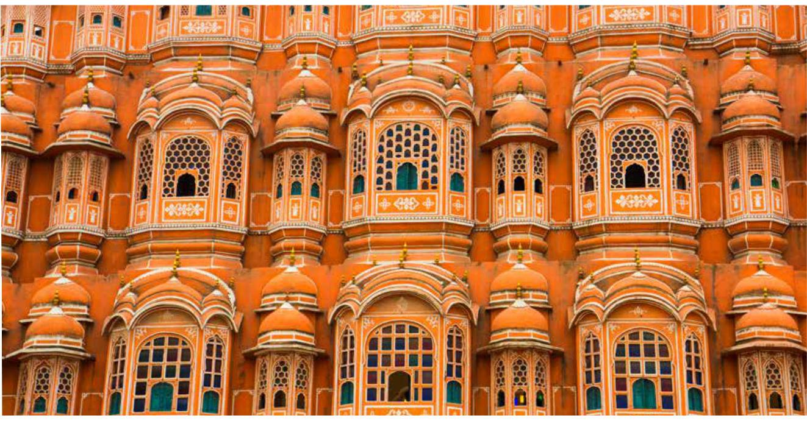
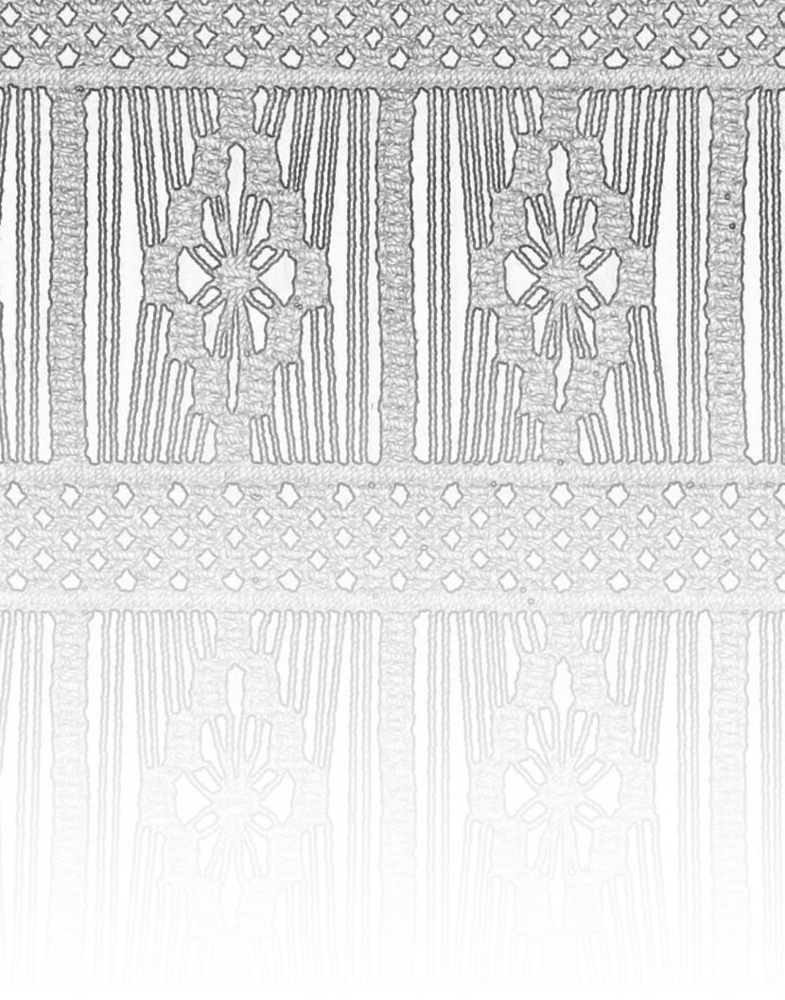
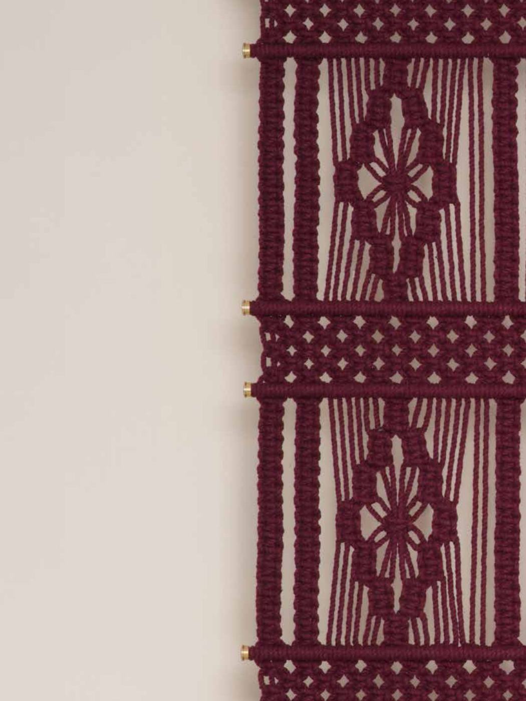
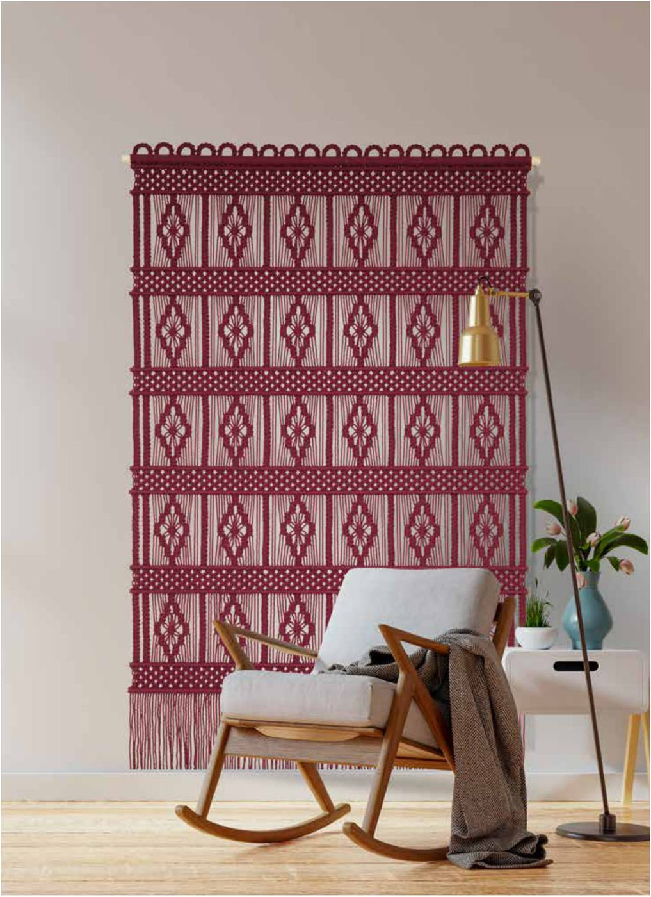
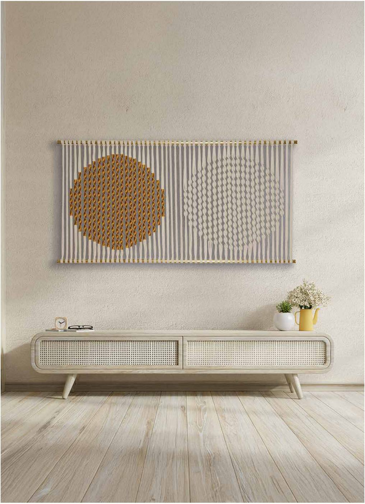

Fiber art atelier · India
Luxuriously Artisanal. Radically Human.
Welcome to the world of intricate fiber art, brought to life through luxuriously handcrafted macramé.
Welcome to the world of intricate fiber art, brought to life through luxuriously handcrafted macramé.
Not mass produced. Not machine made. Entirely human. We believe handmade craft belongs at the highest level of luxury, and that the artisans behind it deserve to be celebrated, not forgotten.
Weaving is both an art and a craft. At the intersection of innovation and tradition lies a path to preserving the irreplaceable techniques of the past while creating new mastery with fiber and its weaves.
Every piece is slow-produced by master craftsmen trained in heritage techniques, using the finest materials, for architects, interior designers, hotels, corporate spaces and luxury residences.
Not mass produced. Not machine made. Fine cords, brass hardware and hundreds of hours by master hands.
Every work can be re-scaled, re-coloured or co-created from a word that belongs to your space.
From a slender Fila on a single wall to Meander, an installation suspended across a ceiling.
Okha, in five plates. Every work in the collection travels the same path, from a word to a wall.




From the wall, into the room, across the ceiling. In 2026 the studio moved from tapestry to sculpture, and now to installations at architectural scale.

Sixteen named works, 2.5 to 7.5 feet, each born from a word and its meaning.

A stainless steel form given its soul in macramé. Inspired by the swell of the sea.

Macramé at architectural scale. It is not hung on a wall; it inhabits the space beneath it.

"Handmade craft belongs at the highest level of luxury. And the artisans behind it deserve to be celebrated, not forgotten."Prabhat Kumar · Co-founder
Over three decades of collective design mastery and a passion for India's artisanal heritage, pushing the boundaries of material and form, from tapestry to sculpture.

"My fingers still remembered the knots, but my heart was forgetting."Raja Ram Pradhan
He grew up weaving Madur carpets in a West Bengal village, mastered macramé in export houses, and became an electrician when the pandemic stopped exports. We placed the threads back into his hands.
Where the work has been shown, and who has stopped to feel it.
Visited by Shri Giriraj Singh, Minister of Textiles, who watched our master craftsman knot in real time.
Represented in Madhapur, curated by fine arts practitioner Annapurna Madipadiga.
National news channels covered the art, and the artists, behind Knotty Things.
If the outer experience doesn't feel like Knotty Things, nothing inside it does either. Every work travels rolled, protected and finished by hand.
For hotels, workplaces and private residences. Share the wall, the light and the story of the place; we'll respond with a concept.
Start the conversation →